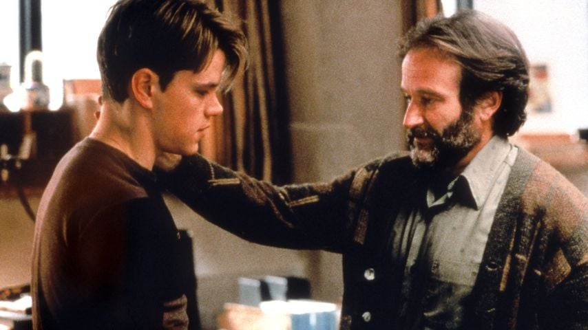

Date de sortie : 1997
Réalisateur : Gus Van Sant
Genre : Drame, Psychologie
Acteurs principaux : Matt Damon, Robin Williams, Ben Affleck, Stellan Skarsgård
Note globale : 4/5 ❤️
Un film d'une justesse incroyable, porté par des interprétations magistrales. C’est le genre d’œuvre qui rappelle pourquoi le cinéma est un art du partage émotionnel.
Résumé : De quoi ça parle ?
Will Hunting est un génie des mathématiques, mais aussi un rebelle issu des quartiers populaires de Boston qui enchaîne les petits boulots. Après une bagarre, il est contraint de suivre une thérapie et d'étudier les mathématiques de haut niveau pour éviter la prison. Sa rencontre avec Sean Maguire, un thérapeute atypique, va bouleverser sa vision du monde et de lui-même.

L'essence même du cinéma
C’est clairement excellent !! L’histoire est magnifique et tellement bien racontée, j’étais à fond dedans du début à la fin. C’est exactement pour ça que je kiffe le cinéma : pour ce genre d’interprétation et ce genre de sentiments.
Ce partage émotionnel avec le spectateur m’a complètement submergé. On n'est pas juste devant un écran, on vit l'histoire avec eux.
Un duo d'acteurs légendaire
Le travail de Matt Damon et Robin Williams, c’est du grand cinéma. On comprend très bien les deux personnages centraux : Will, qui se sent rejeté et s'auto-sabote, et Sean, qui veut sincèrement sa réussite et son bonheur, sans rien attendre en retour.

À côté de ça, il y a le professeur (Lambeau) qui veut aussi la réussite de Will, mais une réussite différente : celle de quelqu’un qui le remplacera plus tard. C'est une vision du succès à deux courants, presque opposés, qui crée une tension passionnante dans le récit.
Une bande-son au service du cœur
Les musiques sont parfaitement utilisées. Elles respirent l’émotion à chaque scène et accompagnent le film avec une justesse incroyable. C’est un ajout hyper impactant, qui reflète pleinement les émotions intérieures de Will à mesure qu'il baisse sa garde.
La libération
La scène de libération de Will est tellement touchante. C’est une véritable acceptation de la vie, de son passé et de son futur. Le film nous le fait comprendre à travers tous les signes possibles, sans jamais en faire trop.
Je pense n’avoir rien d’autre à dire sur ce film. C’est une œuvre essentielle, humaine et tout simplement brillante.
Note finale : 4/5 ⭐️⭐️⭐️⭐️❤️